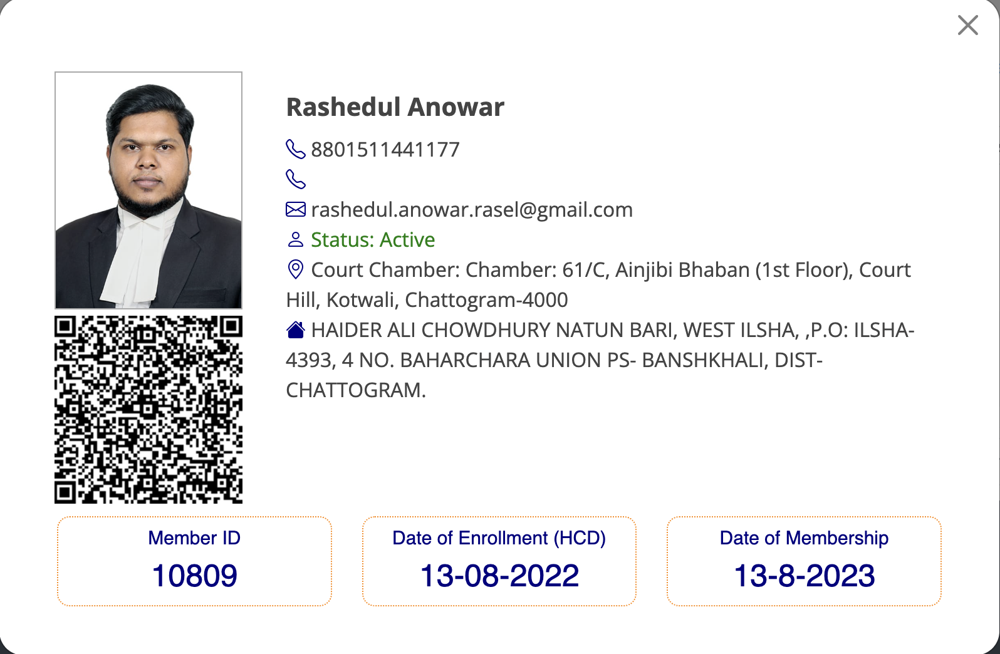
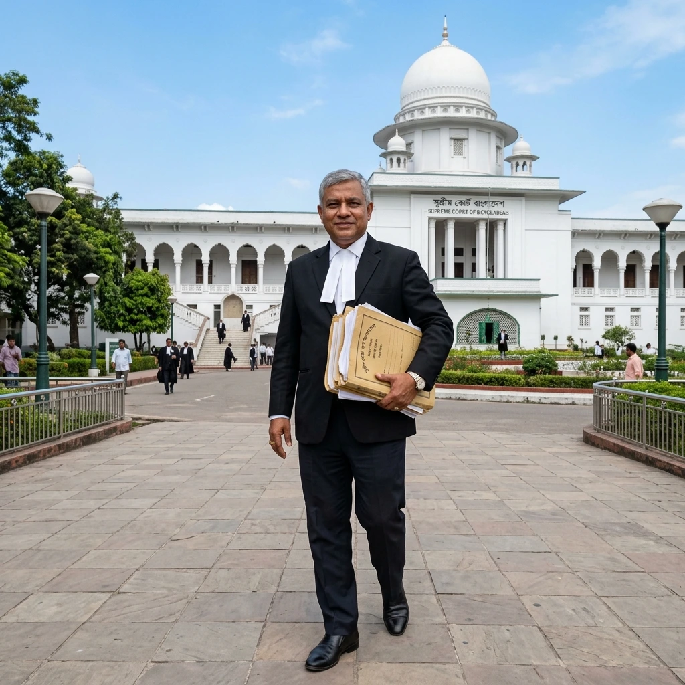
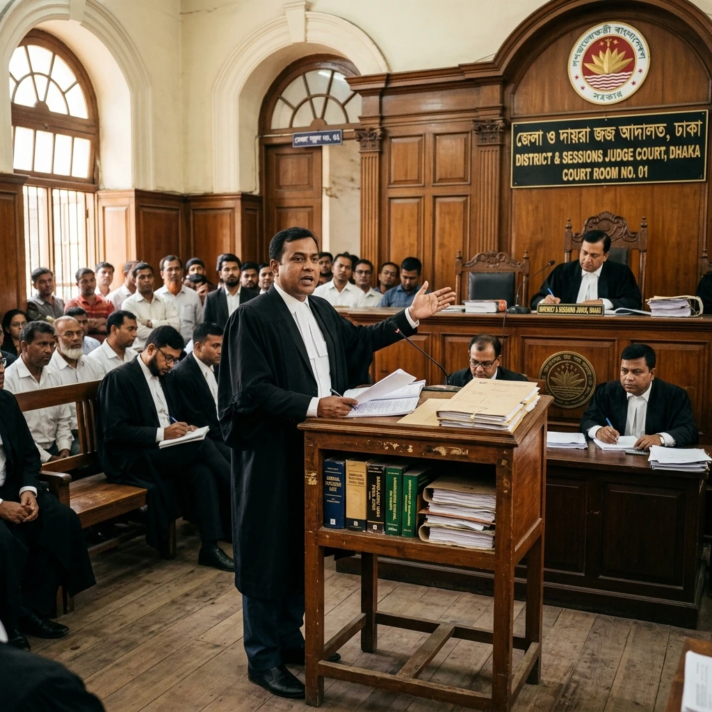
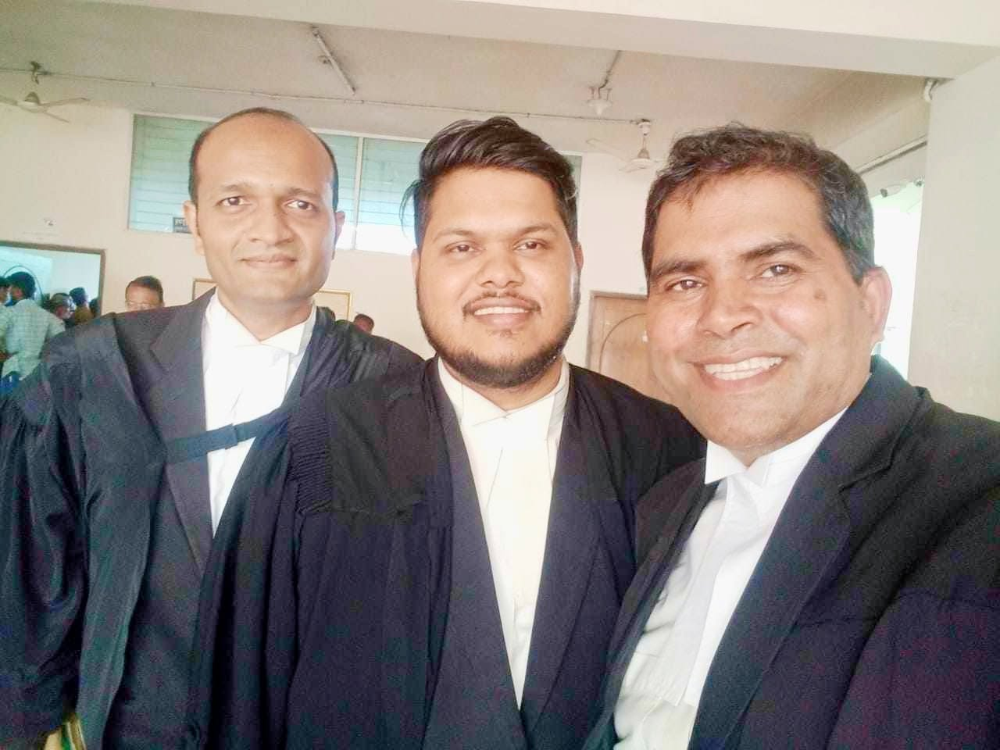
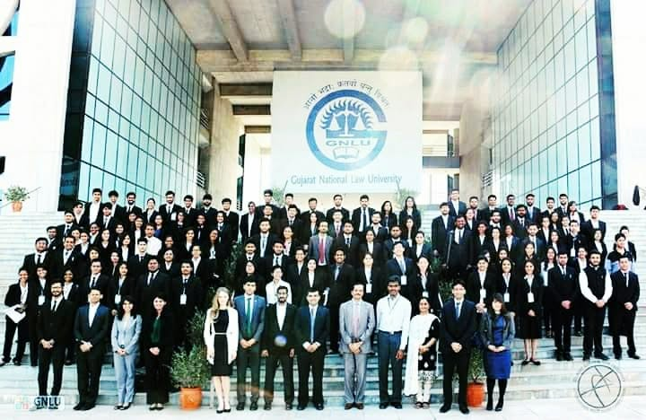

Experienced Advocate of the Supreme Court of Bangladesh and District & Sessions Judge Court, delivering strategic counsel and courtroom defense in Civil, Criminal, Corporate, and Constitutional Writ matters.

Advocate Rashedul Anowar Rasel provides premier legal representation across the Supreme Court of Bangladesh and District & Sessions Judge Courts. With rigorous preparation, deep statutory insight, and courtroom tenacity, we safeguard our clients' rights, businesses, and family legacies.

Enrolled with the Bangladesh Bar Council and an active member of the Supreme Court Bar Association (SCBA). We provide strategic consultation across our designated chambers in Dhaka and Chattogram.
61/C, Ainjibi Bhaban (1st Floor), Court Hill, Kotwali, Chattogram-4000.
Room No- 3004 (Annex), Supreme Court Bar Association, Annex Building, Shahbagh, Dhaka-1000.
Room No- B-13, Nahar Complex (2nd Floor), 25/1, Court House Street, Kotwali, Dhaka-1100.
Working across High Court Division & District Courts with deep legal understanding and dedicated representation.


Recognized and licensed across the highest judicial and legal bodies of Bangladesh.
Explore the milestone journey from District Court advocacy to High Court Division practice and landmark case verdicts.
Commenced professional court practice handling complex civil land title disputes, partition suits, and criminal bail proceedings across the subordinate trial courts of Dhaka.
Get clear, reliable guidance from our experts to help you understand your legal questions with confidence.
Submit your legal inquiry and our senior team will review your case with strict confidentiality.
Request a consultation and let our professionals guide you through the next steps.
Expert legal commentary on Bangladesh Supreme Court precedents, land laws, bail jurisprudence, and statutory compliance.
A comprehensive legal analysis on seeking Constitutional Writs of Mandamus, Certiorari, and Habeas Corpus before the High Court Division to challenge unlawful administrative decisions.
Read Full Article →
Key criteria for selecting experienced Supreme Court and District Court advocates for complex multi-jurisdictional matters.
Read Full Article →Essential legal guide to CS, SA, RS, BS survey records, AC Land mutation disputes, and Title Suits under Specific Relief Act 1877.
Read Full Article →
Appellate Division guidelines regarding Section 498 anticipatory bail and High Court inherent powers to prevent abuse of legal process.
Read Full Article →Legal statutory requirements for limited companies in Bangladesh, BIDA foreign investment compliance, and commercial contract arbitration.
Read Full Article →Legal rights of parties under Muslim Family Laws Ordinance 1961, Family Courts Act 2023, and Guardians & Wards Act 1890.
Read Full Article →Strict legal notice timelines under Negotiable Instruments Act 1881 and financial defense strategies in Artha Rin Adalat Ain 2003.
Read Full Article →A glimpse into our professional courtroom appearances, chamber consultations, and dedicated legal practice across Bangladesh.

